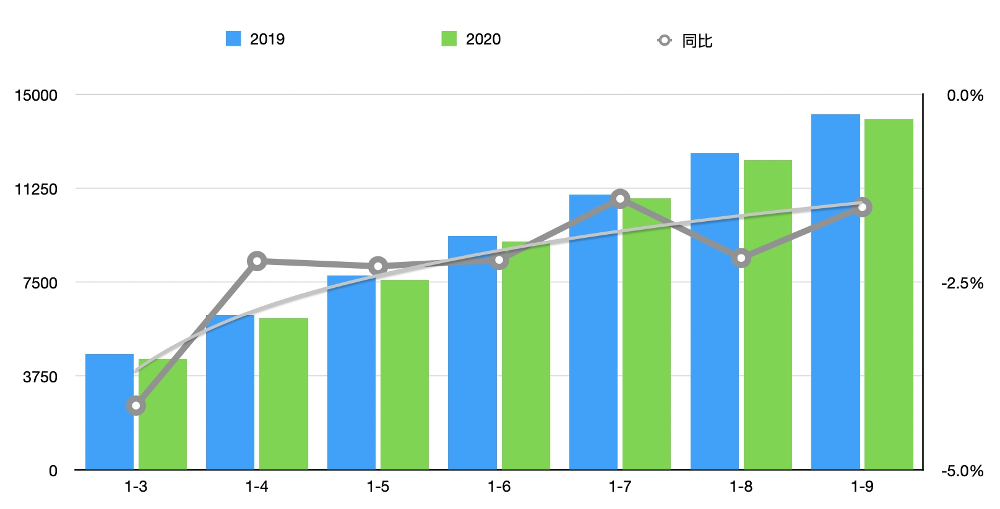
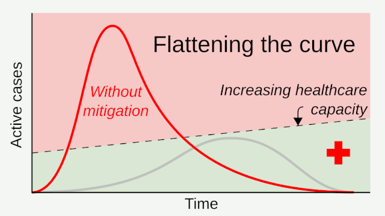

每日一句｜「趋稳」
昨天听新闻，听到这么一句：
服务贸易逆差大幅减少。前 3 季度，我国服务出口降幅趋稳，出口降幅小于进口 22 个百分点，带动服务贸易逆差下降 50.0% 至 5910 亿元，同比减少 5901 亿元。
http://www.mofcom.gov.cn/article/news/202011/20201103012941.shtml
其实这个「降幅趋稳」一类的表达，之前也遇到过，但当时并没细想，就想着照字面翻过去就得了，于是造了个「decline steadily」。但这明显不对，这个英文叫「稳步下滑」，意思完全反了。
如果看服贸出口滚动数据就能发现，降幅的趋势线在逐渐拉平，稳定到某一个值。从图像上来看，就是这条曲线的斜率变「平」了。基于此，或许也可以说「the slope is turning flat」。

但说到 flat、看到曲线，就很难不想到疫情期间常说的 flatten the curve。二者虽然相似，但将 flatten the curve 用于描述「降幅趋稳」，还是有些不符合语境。如今，flatten the curve 专指疫情期间将感染人数钟形曲线拉平/压平，避免超出医疗系统能力上限。

这么看来，算数也算是译者的「基本能力」之一。
欢迎将您的想法、评论、意见、建议发送至 harveyjanson@icloud.com，请注明「讨论」字样，我会尽量回复。